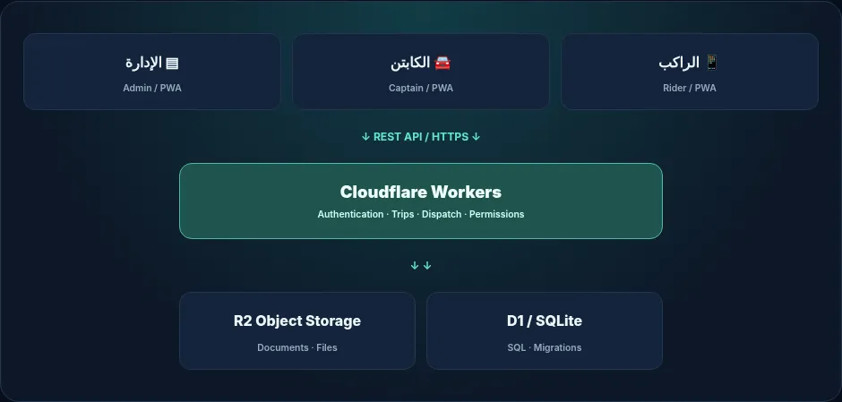

Frontend Development
Responsive, dynamic interfaces in both Arabic and English.
JavaScriptHTML5CSS3BootstrapSassjQueryDOMFlexboxGridRTL
Riyadh · Open to JavaScript / Full-Stack opportunities aligned with my experience
Full-Stack Developer Web · Mobile PWA · Android · Cloud
I work with JavaScript, responsive web interfaces, REST APIs and cloud services. My flagship Mishwar pilot connects rider, captain and admin applications. I coordinate AI-assisted development, review changes and verify test results; it is not a commercial launch.
Three experiences. One shared backend.
This project is a development pilot, not an approved commercial launch.
From user experience to backend integration, I focus on practical, testable improvements.
I work on web and installable mobile PWA experiences and training projects. Starting with HTML, CSS and JavaScript, I expanded in Mishwar to Node.js, REST APIs, cloud services, databases and an experimental Java Android wrapper.
On Mishwar, I translate requirements into testable functionality, prioritize development tasks, review code changes and validate their quality, investigate bugs, and validate integration and tests before acceptance. I do not present this pilot as a commercially launched product.
Frontend + API + database + deployment
Investigating root causes and regression results
From training projects to multi-app systems
Technologies evidenced by projects, grouped by function — without claiming unsupported experience.
Responsive, dynamic interfaces in both Arabic and English.
Service integration, user identities, requests, and permissions.
Relational data, cloud object storage, and migrations.
Installable mobile-first PWAs and an experimental Android Java/Custom Tabs wrapper with Gradle, not native iOS or Flutter apps.
Deploying and connecting web applications on cloud platforms.
Versioning, troubleshooting, testing and release checks.
Requirements analysis, guiding coding assistants and reviewing outputs.
Mishwar is my flagship full-stack pilot, alongside every public repository — including clearly labeled training projects.
Ride-hailing pilot connecting three web experiences: rider, captain and admin. Features include user accounts and roles, trip workflows, location and map integration, an admin portal, and a Cloudflare Workers API with D1 and R2.
Web app demos may require login; these are not approved commercial apps or distribution-ready APKs.
Architecture, mobile delivery, test evidence, trade-offs and current limitations.
One shared backend and REST APIs connecting rider, captain and admin workflows across interfaces and data.
Cloudflare D1 on SQLite, SQL migrations, and R2 for file and document storage.
Trip requests and dispatch flows, location validation, maps and routing integrations including TomTom tests.
Sessions, permissions, HTTP/CORS debugging, Node.js tests and validating changes before merges or deployments.
These are development and test-stage capabilities, not claims that every feature is live for real customers.
The Mishwar case study links route, access-control and location tests, identifying what was verified locally and what still requires real-world acceptance.
Direct demos and reviewable evidence, followed by the complete project directory.

A three-app pilot with a shared backend, security and routing evidence, and transparent limitations.
Read the engineering case study ↗ Explore the safe product tour ↗A multi-page practice website built with JavaScript, Sass and Webpack.
Visit website ↗A front-end storefront prototype with product, search and cart interfaces; not a commercial store.
Visit website ↗Published websites first, followed by completed training projects without live demos.
Pilot ride-hailing system with rider, captain and admin web apps, REST APIs, Cloudflare D1 and R2 storage.
Mishwar case study ↗Capstone training project: a responsive, multi-page coffee brand website with products, distributors and contact sections.
Visit website ↗Front-end storefront prototype with product, search, checkout and payment-interface pages; an online demo, not a real merchant system.
Visit website ↗My personal website presenting projects, skills and contact details, now upgraded to a full-stack portfolio.
Visit website ↗YouTube-inspired front-end practice with video layouts, channel pages and responsive grids.
Visit website ↗Marketing landing page for a restaurant mobile app, designed for different screen sizes.
Visit website ↗Company or agency landing-page concept focused on visual sections and content hierarchy.
Visit website ↗Product landing-page concept emphasizing features, visuals and a clear call to action.
Visit website ↗Coming-soon announcement page created as landing-page practice.
Visit website ↗Small HTML/CSS styling exercise for an avatar-inspired web page.
Visit website ↗Five frontend exercises without currently published previews.
Service-site concept for an AC technician, focused on contact actions, responsive navigation and visual effects.
Completed training project · no live demoTraining exercise for responsive dashboard layouts and visual information organization.
Completed training project · no live demoFrontend practice including a gallery, slider and small JavaScript interactions.
Completed training project · no live demoSmall practice project exploring responsive page layouts.
Completed training project · no live demoEarly small experiment exploring utility-first styling with Tailwind CSS.
Completed training project · no live demoI keep a practical cycle: understand, build, test, and document.
Coordinating rider, captain and admin development, API and database integration, branching, bug analysis and AI-assisted test review.
Applying HTML, CSS, JavaScript, Sass, Bootstrap, jQuery and Webpack in a storefront, dashboards, landing pages and a coffee-company training capstone.
Frontend learning through Hsoub Academy and Tuwaiq workshops covering HTML, CSS, DOM, Bootstrap, Git and JavaScript.
An academic background in analysis and organization, followed by a focused transition into web development.
Understand what failed rather than hiding symptoms.
Break requests into testable, ordered changes.
Check behavior and regressions before release.
Communicate decisions and review deliverables.
I am happy to discuss Full-Stack, JavaScript and product engineering opportunities in Riyadh or remotely across Saudi Arabia.